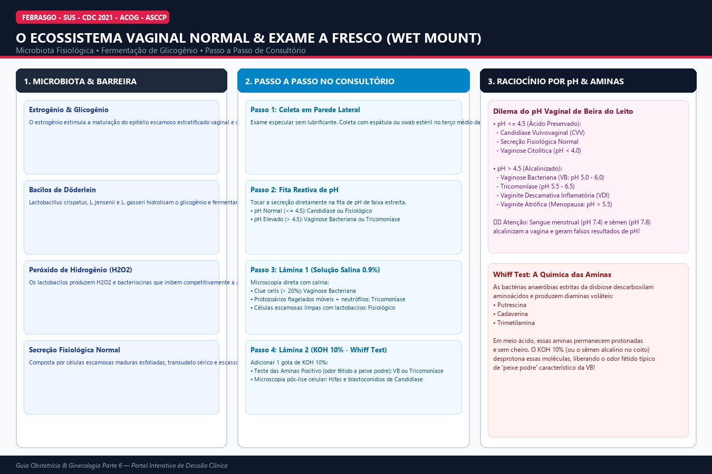

50
Padrão Ouro Ambulatorial
Ecossistema Vaginal Normal e o Exame a Fresco
Lactobacilos de Döderlein, glicogênio celular, barreira ácida e Wet Mount
Didática & Linha de Defesa Fisiológica
Na menacme, os altos níveis de estrogênio estimulam a maturação das células escamosas vaginais, acumulando reservas de glicogênio. Os lactobacilos (*Lactobacillus crispatus*, *L. jensenii*) hidrolisam o glicogênio e produzem ácido lático, mantendo o pH vaginal ácido entre 3.8 e 4.5. Além disso, sintetizam peróxido de hidrogênio (H2O2) e bacteriocinas, impedindo a proliferação de patógenos anaeróbios e leveduras.
Passo a Passo do Exame a Fresco (Wet Mount):
- Inspeção Especular: Coleta de secreção em parede vaginal lateral (evitar muco cervical e sangue).
- Fita de pH: pH normal ≤ 4.5; pH > 4.5 indica quebra da barreira (VB ou Tricomoníase).
- Lâmina com Salina 0.9%: Avaliação de células-guia (clue cells), motilidade de flagelados e leucócitos.
- Lâmina com KOH 10% (Whiff Test): Lise de células escamosas e volatilização de diaminas pútridas (odor positivo na VB). Permite visualização imediata de pseudo-hifas de cândida.

Clique para Ampliar HD
Diagrama 1: Flora fisiológica, produção de ácido lático e fluxograma do Wet Mount.